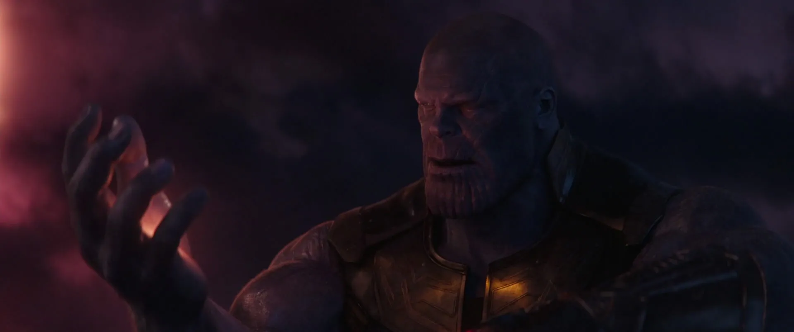
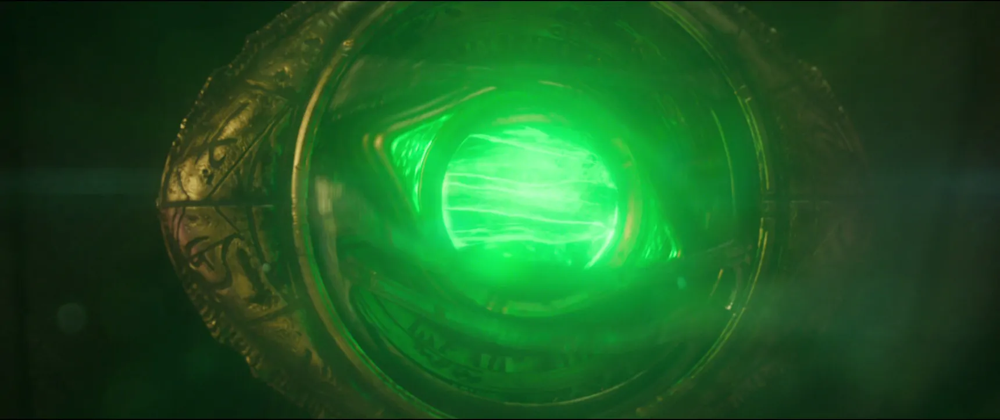
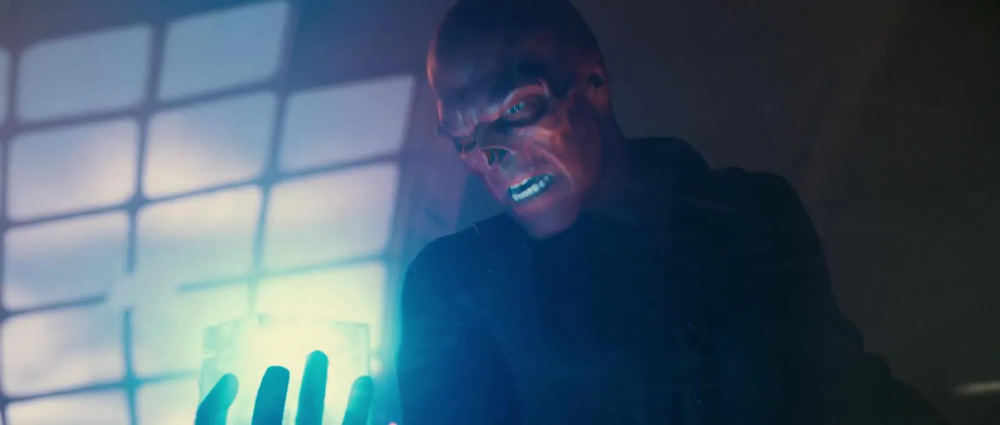
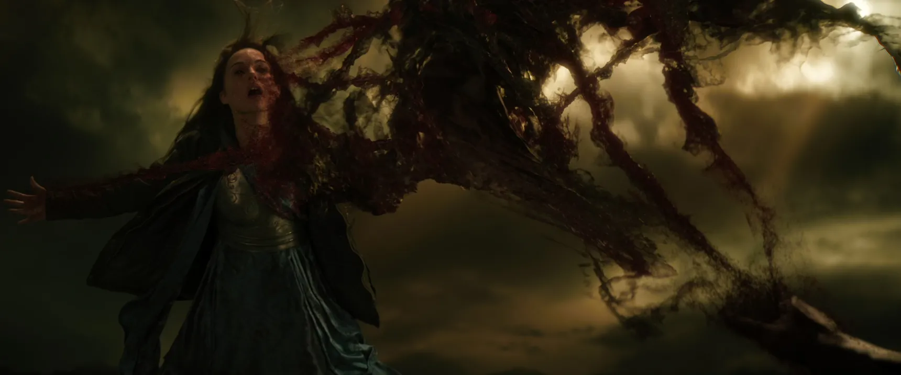
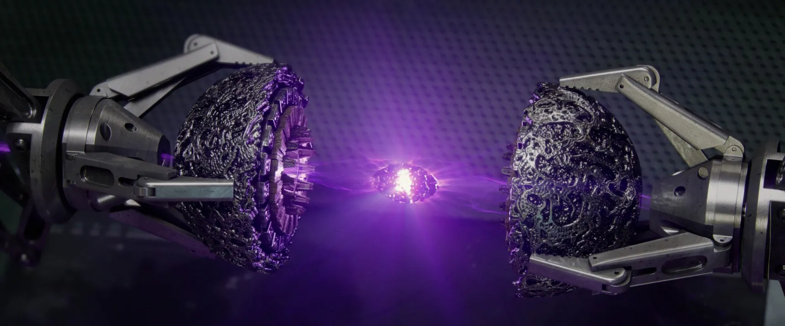

| Soul |
Orange |
The Soul Stone was the lone holdout of the MCU Infinity Stones, and the subject of some much-informed comics-related speculation. But we eventually learned its location in Avengers: Infinity War. Hidden on the planet Vormir, and overseen
by a ghastly form of the Red Skull, the stone was only available for use by an entity willing to sacrifice someone they love to the gem’s stony altar. In Infinity War, Thanos chose Gamora, his adoptive daughter. |
 |
| Time |
Green |
The Time Stone features prominently in Doctor Strange, in which the eponymous hero uses the Eye of Agamotto’s power to control time when he defeated the demon Dormammu. Earth’s first sorcerer, Agamotto, had bound the Time Stone into a
pendant thousands of years before. |
 |
| Space |
Blue |
The first Infinity Stone to appear in a Marvel movie, this one’s form — as a glowing blue cube about the size of a softball known as the Tesseract — was a neat red herring for another powerful Marvel Comics artifact, the Cosmic Cube. |
 |
| Mind |
Yellow |
The Mind Stone first appeared, secretly, in The Avengers. Originally hidden in the tip of Loki’s mind-control scepter, it’s one of the most well-traveled and consequential Stones of the lot. |
|
| Reality |
Red |
The Reality Stone only featured prominently in Thor: The Dark World, where its malleable form, known as the Aether, was used as a weapon by the Dark Elf villain Malekith. At the end of the film, the Reality Stone was captured by Asgardian
forces and brought to the Collector, and ancient being who ... collects stuff, for safekeeping. Apparently keeping two Stones in close proximity in Asgard’s armory was considered to be too dangerous, and they already had the Space
Stone, or Tesseract. |
 |
| Power |
Purple |
Speaking of Guardians of the Galaxy, its plot was centered around the Power Stone, recovered from an ancient ruin by Peter Quill and sought by the Collector and Ronan the Accuser. Ronan was supposed to be grabbing it for Thanos, but decided
instead to use its abilities to try to take revenge on the people of the planet Xandar. |
 |